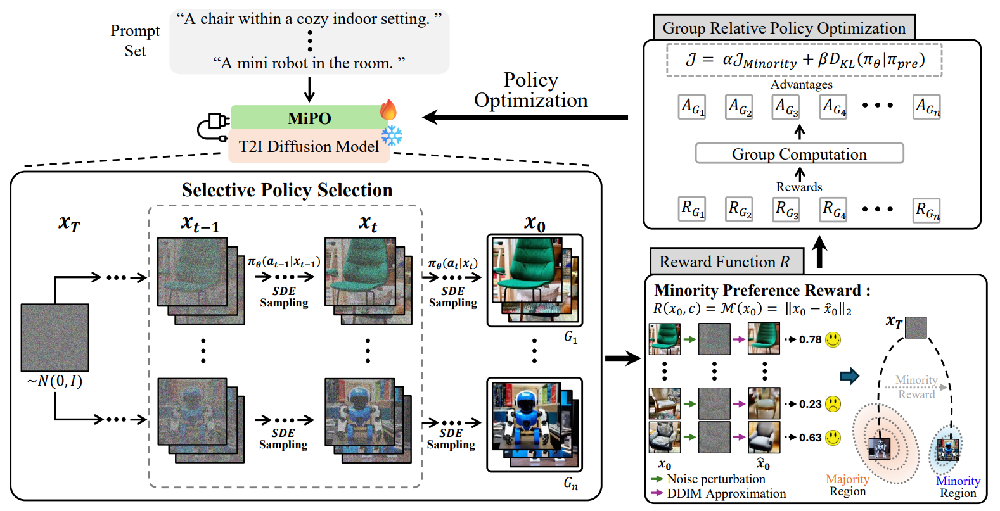
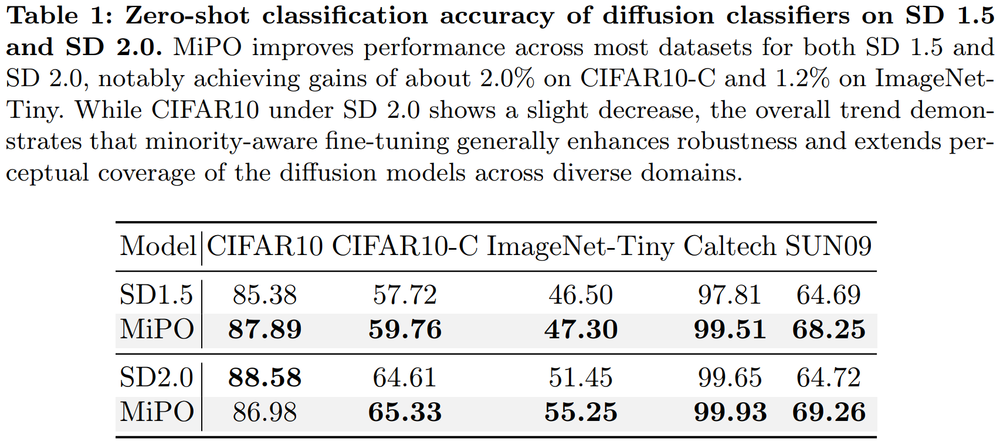
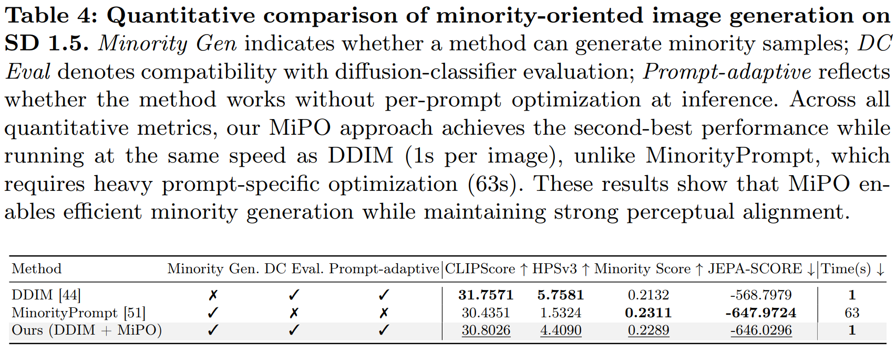
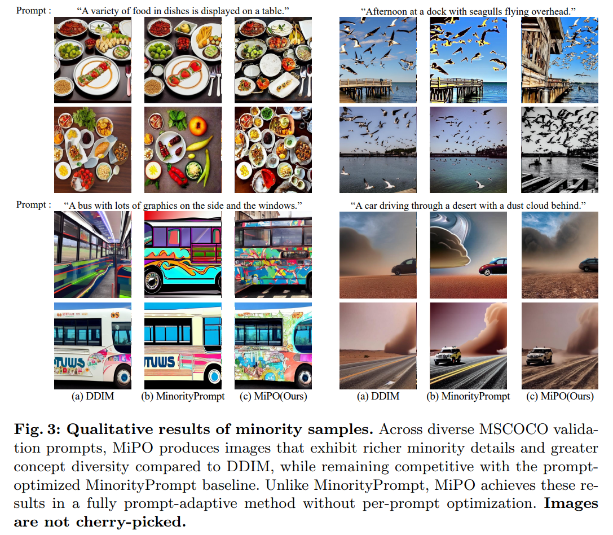

Additional real images required for minority preference optimization.
ECCV 2026
Diffusion Classifier
Minority Sampling
Self-Improving Diffusion Classifiers with Minority Preference Optimization
MiPO fine-tunes text-to-image diffusion models with minority preference rewards, expanding low-density generative coverage and improving zero-shot diffusion classification.
1Korea University
2Kook Min University
3Kyung Hee University
Core idea
What the model cannot generate well, it struggles to recognize.
MiPO turns minority sampling into a self-improving signal: generated samples with higher minority scores receive stronger policy updates, helping the diffusion model better represent undercovered visual regions.
Compact plug-and-play adapter trained with GRPO.
Maximum zero-shot classification improvement reported across benchmarks.
Per image, matching DDIM while remaining prompt-adaptive.
Abstract
Improving diffusion perception by strengthening minority generation.
Diffusion classifiers perform robust zero-shot classification, but their perception is biased toward majority, high-density regions of the pretrained data manifold. Minority, low-density concepts are often poorly generated and therefore less accurately recognized.
MiPO reveals and exploits the connection between minority sampling and diffusion-classifier perception. Instead of relying on extra image data, external reward models, or per-prompt optimization, MiPO uses arbitrary caption prompts to self-generate samples, score minority preference, and fine-tune the diffusion model itself.
01
Reveals that diffusion classifier errors are strongly tied to undercovered minority regions of the generative distribution.
02
Introduces a DDIM reconstruction discrepancy based minority preference reward for self-improving diffusion models.
03
Combines GRPO, LoRA, KL regularization, and selective early-timestep updates for stable prompt-adaptive optimization.
Method Overview
Minority Preference Optimization
MiPO samples multiple SDE trajectories from the same prompt and initial noise, rewards samples that lie in minority regions, and updates only a compact LoRA policy while preserving the pretrained diffusion prior.

Generate groups
Sample multiple SDE trajectories for each prompt using the same initial noise to form stable comparison groups.
Score minority
Compute DDIM reconstruction discrepancy as a minority score: larger error indicates weaker denoiser coverage.
Normalize rewards
Use GRPO to convert group-level rewards into relative advantages, making optimization robust to reward scale.
Update LoRA
Fine-tune early denoising timesteps with KL regularization so minority coverage improves without drifting from the prior.
Quantitative Results
Better zero-shot diffusion classification and efficient minority generation
MiPO improves most zero-shot classification benchmarks for SD 1.5 and SD 2.0, while also producing minority-oriented samples at DDIM-level inference speed.
Zero-shot Classification
Diffusion classifier accuracy on SD 1.5 and SD 2.0
SD2.0 SUN09 69.26

87.89CIFAR10 accuracy with SD1.5 + MiPO.
65.33CIFAR10-C accuracy with SD2.0 + MiPO.
55.25ImageNet-Tiny accuracy with SD2.0 + MiPO.
99.93Caltech accuracy with SD2.0 + MiPO.
Minority Generation
Prompt-adaptive generation without per-prompt optimization
Time 1s / image

Image Visualization
Qualitative minority samples
Compared with vanilla DDIM, MiPO produces richer minority details and more diverse local structures while remaining fully prompt-adaptive.

Additional Analysis
Why not directly use MinorityPrompt?
MinorityPrompt learns prompt-specific low-density tokens during inference. Since diffusion classifiers must generalize to unseen class prompts and operate through forward-process noise prediction, prompt-specific reverse-process optimization is not directly compatible with diffusion-classifier evaluation.
Failure Cases
LabelME and VOC2007 contain ambiguous multi-object samples.
Supplementary analysis shows that performance drops on these domains are linked to multi-object contamination and single-label ambiguity, rather than a simple failure of MiPO to learn a better classifier.
Citation
BibTeX
@article{kim2026self,
title={Self-Improving Diffusion Classifiers with Minority Preference Optimization},
author={Kim, Hyunsoo and Wi, Jungmyung and Um, Soobin and Kim, Donghyun and Kim, Suhyun},
journal={arXiv preprint arXiv:2607.03770},
year={2026}
}